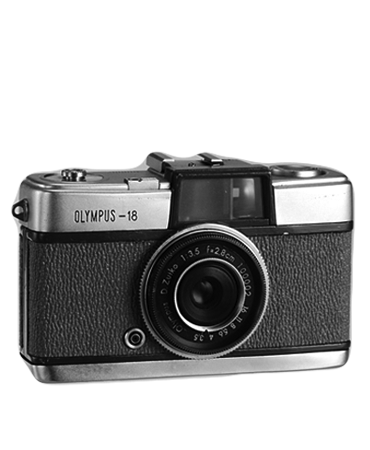
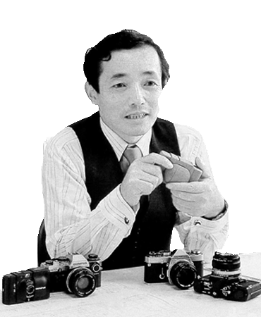

Early Design History
Concept and Design Perfected in Parallel
In the Beginning...
The original Pen was introduced in 1959. It was designed by Yoshihisa Maitani, and was the first half-frame camera produced in Japan. It was one of the smallest cameras to use 35mm film in regular 135 cassettes. It was thought to be as portable as a pen; thus the name. The idea was to be much copied by other Japanese makers.A series of derivatives followed, some easier to use with the introduction of exposure automation, e.g. the Pen EE; others with a wider aperture lens and a manual meter.
In 1966 the arrival of the Rollei 35, a camera almost as compact but making normal 24×36 exposures, would announce the beginning of the end for the half-frame concept. However, Olympus went on producing the simpler models of the Pen family until at least 1983. In the descriptions below, the focal lengths indicated do not give the same angle of view as for full-frame cameras: 30mm on the Pen is roughly equivalent to 45mm on a full-frame, and 28mm to a 40mm.

Original Pen Prototype
Codenamed "Olympus 18" during development

Yoshihisa Maitani
Olympus Camera Designer

Final Design
Launched in 1959